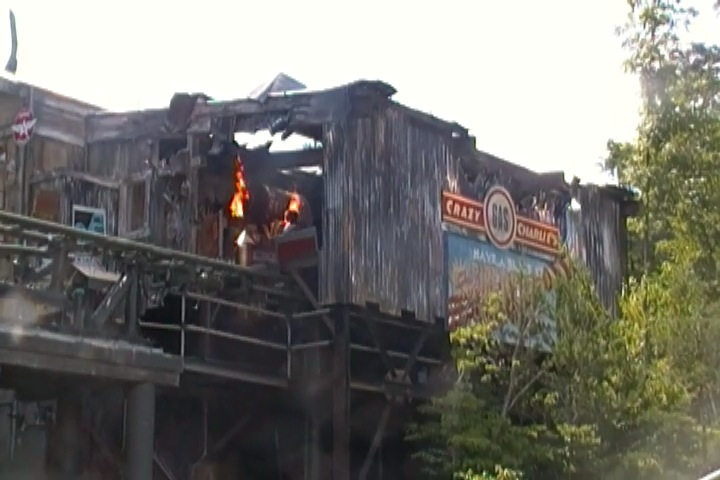

| |
Firechaser Express Review
We're here at Dollywood. Today, we're going to be reviewing the parks unique family coaster, Firechaser Express. This has got to be one of the coolest and most unique family coasters ever made. I mean, yeah. It's a family coaster. Not one of those fuzzy blurred line coasters where some would call it a family coaster, but others wouldn't cause it does stuff that family coasters generally don't do. No. This is a full blown family coaster. But with that said, it just does so much, and has such a cool and unique theme. I mean, this ride has 2 launches, a lifthill, big drop, and even a backwards section. Just a really cool ride. All right. Let's see what this ride has to offer. Get in the cars, pull down the lap bars, and we just launch right out of the station. Now this launch is nothing special. It's pretty slow, and honestly, it may be the least forceful launch ever. This thing makes Pony Express look like Xcelerator in comparison (Oops. Silly me. I meant to say it makes Xcelerator look like Pony Express in comparison. We all know that PONY EXPRESS IS THE BEST RIDE EVER!!!). We head up a small little twisty hill, and head into a downward helix, before turning to the right, continuing in that curved helix. So far, just a chill, cute little family coaster. But wait. We then stop and head up a lifthill. OK. That launch bit wasn't much. Cute, a bit of a sample platter for launched coasters. Excatly the perfect ride for a child's first launched coaster. And now we climb up the lifthill. It's not a super big lifthill, but it's a family coaster. We reach the top, get a good view of the mountains, go around this curved dip, turn around, head down a small drop, and down another curved drop. Hey, we're actually gaining a little bit of speed here. Through a small dip, we then rise up another hill. There's even a tiny pop of airtime here. I'm definetly enjoying this. We head around a curve, through this shack, and head into a midcourse brake. This really is a cool family coaster. And yet. There's more. We go around a turn, down a small curved drop, up a small hill, and hey. Down a bigger drop. Wee! More speed! Through another curve, and we head over a small hill. Another little pop of airtime. I'm definetly enjoying this ride. We go around some S Curves, and hey. You definetly get some laterals in this part of the ride. We then go into this brake run. Wow. That definetly was a cool family coaster that...why does the track just stop here? And what the hell are all these fireworks doing? OH SH*T!!! THEY'RE GOING OFF!!! WE'RE ALL GOING TO DIE!!! And yeah! This ride launches backwards. Damn. You do NOT see that on most family coasters. We go up a small hill. We go over it slowly, but hey. We're heading through all this backwards. Who the hell knows what's gonna happen next (Shut up people who watched a POV beforehand)? We head through this sort of raised curve backwards, and it's certainly interesting. Up a small bit and...WHOA!!! We actually head down a decent sized drop. That was a fun surprise. Up another curved bit, and into a brake run. But wait. Is this the end? We roll backwards, and yeah. We roll right into the station (Dual track switches are magic). And yeah. It's by far the most unique family coaster ever. I mean, not only does this thing have both launches and a big lifthill and big drop, but also one is a backwards launch, and all this switch track. I mean, the only other coaster that has that much switching is Expedition Everst. And that's a full blown major coaster and one of Disney's best. Seriously, this is worth a ride if you're at Dollywood. Sure, it may not be the biggest or best. But it is a fun enjoyable ride.
6/10
Location: Dollywood
Opened: 2014
Built by: Gerslauter
Last Ridden: June 25, 2016
Firechaser Express Photos



Home
|